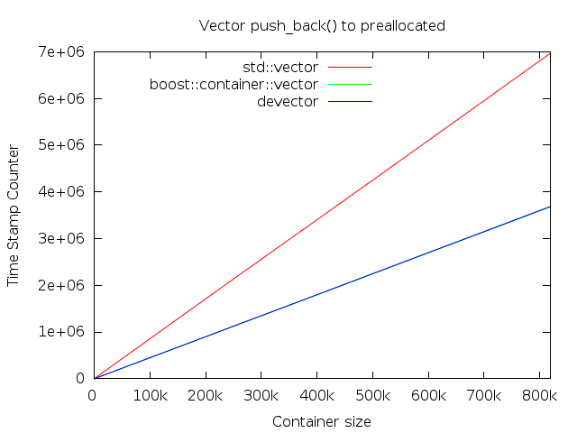
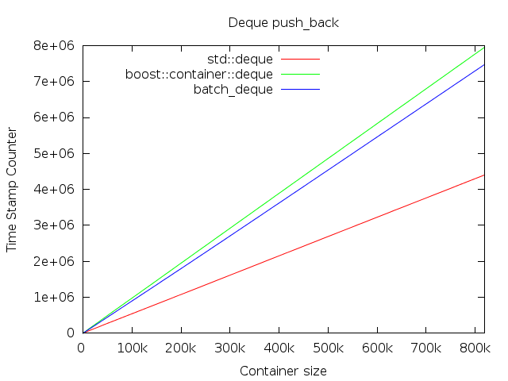

![[Warning]](http://www.boost.org/doc/libs/common/doc/src/images/warning.png) |
Warning |
|---|---|
The diagrams below show unexpected results. They should not be considered correct until peer-reviewed. |
The first test compares the performance of the push_back() method on equal terms. The value type is
unsigned, a primitive type. In
case of the vectors, the necessary memory is preallocated and pre-faulted.
On the first diagram, boost::container::vector
and devector show very similar
characteristics, and the latter shadows the former.

Deques has to allocate memory on demand, because std::deque has
no reserve method.

The benchmarks ware produced on a machine equipped with an AMD FX 8320 (3.5
GHz) processor and 16 GiB of RAM memory (1600 MHz), running Linux 3.13, with
CPU scaling disabled. The benchmark process was pinned to dedicated core, which
was isolated from the operating systems schedulers pool (using the isolcpus boot flag). The benchmark program
was compiled by GCC 5.3, using the -O2 flag.
The actual Time Stamp Counter values are not directly comparable to other values produced on different machines.